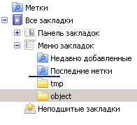

В предыдущей статье мы рассмотрели основы Drag’n’Drop. Здесь мы разберём дополнительные «тонкие места» и приёмы реализации, которые возникают на практике.
Почти все javascript-библиотеки реализуют Drag’n’Drop так, как написано (хотя бывает что и менее эффективно).
Зная, что и как, вы сможете легко написать свой код переноса или поправить, адаптировать существующую библиотеку под себя.
Этот материал не строго обязателен для изучения, он специфичен именно для Drag’n’Drop.
Документ
Как пример задачи – возьмём документ с иконками браузера («объекты переноса»), которые можно переносить в компьютер («цель переноса»):
- Элементы, которые можно переносить (иконки браузеров), помечены классом
draggable. - Элементы, на которые можно положить (компьютер), имеют класс
droppable.
<img src="chrome.png" class="draggable">
<img src="firefox.png" class="draggable">
<img src="ie.png" class="draggable">
<img src="opera.png" class="draggable">
<img src="safari.png" class="draggable">
<p>Браузер переносить сюда:</p>
<img src="computer.gif" class="droppable">Работающий пример с переносом:
Далее мы рассмотрим, как делается фреймворк для таких переносов, а в перспективе – и для более сложных.
Требования:
- Поддержка большого количества элементов без «тормозов».
- Продвинутые возможности по анимации переноса.
- Удобная обработка успешного и неудачного переноса.
Начало переноса
Чтобы начать перенос элемента, мы должны отловить нажатие левой кнопки мыши на нём. Для этого используем событие mousedown… И, конечно, делегирование.
Переносимых элементов может быть много. В нашем документе-примере это всего лишь несколько иконок, но если мы хотим переносить элементы списка или дерева, то их может быть 100 штук и более.
Поэтому повесим обработчик mousedown на контейнер, который содержит переносимые элементы, и будем определять нужный элемент поиском ближайшего draggable вверх по иерархии от event.target.
В качестве контейнера здесь будем брать document, хотя это может быть и любой элемент.
Найденный draggable-элемент сохраним в свойстве dragObject.elem и начнём двигать.
Код обработчика mousedown:
var dragObject = {};
document.onmousedown = function(e) {
if (e.which != 1) { // если клик правой кнопкой мыши
return; // то он не запускает перенос
}
var elem = e.target.closest('.draggable');
if (!elem) return; // не нашли, клик вне draggable-объекта
// запомнить переносимый объект
dragObject.elem = elem;
// запомнить координаты, с которых начат перенос объекта
dragObject.downX = e.pageX;
dragObject.downY = e.pageY;
}mousedownРанее мы по mousedown начинали перенос.
Но на самом деле нажатие на элемент вовсе не означает, что его собираются куда-то двигать. Возможно, на нём просто кликают.
Это важное различие. Снимать элемент со своего места и куда-то двигать нужно только при переносе.
Чтобы отличить перенос от клика, в том числе – от клика, который сопровождается нечаянным перемещением на пару пикселей (рука дрогнула), мы будем запоминать в dragObject, какой элемент (elem) и где (downX/downY) был зажат, а начало переноса будем инициировать из mousemove, если он передвинут хотя бы на несколько пикселей.
Перенос элемента
Первой задачей обработчика mousemove является инициировать начало переноса, если элемент передвинули в зажатом состоянии.
Ну а второй задачей – отображать его перенос при каждом передвижении мыши.
Схематично, обработчик будет иметь такой вид:
document.onmousemove = function(e) {
if (!dragObject.elem) return; // элемент не зажат
if (!dragObject.avatar) { // элемент нажат, но пока не начали его двигать
...начать перенос, присвоить dragObject.avatar = переносимый элемент
}
...отобразить перенос элемента...
}Здесь мы видим новое свойство dragObject.avatar. При начале переноса «аватар» делается из элемента и сохраняется в свойство dragObject.avatar.
«Аватар» – это DOM-элемент, который перемещается по экрану.
Почему бы не перемещать по экрану сам draggable-элемент? Зачем, вообще, нужен аватар?
Дело в том, что иногда сам элемент передвигать неудобно, например потому, что он слишком большой. А удобно создать некоторое визуальное представление элемента, и его уже переносить. Аватар дает такую возможность.
А в простейшем случае аватаром можно будет сделать сам элемент, и это не повлечёт дополнительных расходов.
Визуальное перемещение аватара
Для того, чтобы отобразить перенос аватара, достаточно поставить ему position: absolute и менять координаты left/top.
Для использования абсолютных координат относительно документа, аватар должен быть прямым потомком BODY.
Следующий код готовит аватар к переносу:
// в начале переноса:
if (avatar.parentNode != document.body) {
document.body.appendChild(avatar); // переместить в BODY, если надо
}
avatar.style.zIndex = 9999; // сделать, чтобы элемент был над другими
avatar.style.position = 'absolute';… А затем его можно двигать:
// при каждом движении мыши
avatar.style.left = новая координата + 'px';
avatar.style.top = новая координата + 'px';Как вычислять новые координаты left/top при переносе?
Чтобы элемент сохранял свою позицию под курсором, необходимо при нажатии запомнить его изначальный сдвиг относительно курсора, и сохранять его при переносе.
Этот сдвиг по горизонтали обозначен shiftX на рисунке выше. Аналогично, есть shiftY. Они вычисляются как расстояние между курсором и левой/верхней границей элемента при mousedown. Детали вычислений описаны в главе Мышь: Drag'n'Drop.
Таким образом, при mousemove мы будем назначать элементу координаты курсора с учетом сдвига shiftX/shiftY:
avatar.style.left = e.pageX - shiftX + 'px';
avatar.style.top = e.pageY - shiftY + 'px';Полный код mousemove
Код mousemove, решающий задачу начала переноса и позиционирования аватара:
document.onmousemove = function(e) {
if (!dragObject.elem) return; // элемент не зажат
if ( !dragObject.avatar ) { // если перенос не начат...
// посчитать дистанцию, на которую переместился курсор мыши
var moveX = e.pageX - dragObject.downX;
var moveY = e.pageY - dragObject.downY;
if ( Math.abs(moveX) < 3 && Math.abs(moveY) < 3 ) {
return; // ничего не делать, мышь не передвинулась достаточно далеко
}
dragObject.avatar = createAvatar(e); // захватить элемент
if (!dragObject.avatar) {
dragObject = {}; // аватар создать не удалось, отмена переноса
return; // возможно, нельзя захватить за эту часть элемента
}
// аватар создан успешно
// создать вспомогательные свойства shiftX/shiftY
var coords = getCoords(dragObject.avatar);
dragObject.shiftX = dragObject.downX - coords.left;
dragObject.shiftY = dragObject.downY - coords.top;
startDrag(e); // отобразить начало переноса
}
// отобразить перенос объекта при каждом движении мыши
dragObject.avatar.style.left = e.pageX - dragObject.shiftX + 'px';
dragObject.avatar.style.top = e.pageY - dragObject.shiftY + 'px';
return false;
}Здесь используются две функции для начала переноса: createAvatar(e) и startDrag(e).
Функция createAvatar(e) создает аватар. В нашем случае в качестве аватара берется сам draggable элемент. После создания аватара в него записывается функция avatar.rollback, которая задает поведение при отмене переноса.
Как правило, отмена переноса влечет за собой разрушение аватара, если это был клон, или возвращение его на прежнее место, если это сам элемент.
В нашем случае для отмены переноса нужно запомнить старую позицию элемента и его родителя.
function createAvatar(e) {
// запомнить старые свойства, чтобы вернуться к ним при отмене переноса
var avatar = dragObject.elem;
var old = {
parent: avatar.parentNode,
nextSibling: avatar.nextSibling,
position: avatar.position || '',
left: avatar.left || '',
top: avatar.top || '',
zIndex: avatar.zIndex || ''
};
// функция для отмены переноса
avatar.rollback = function() {
old.parent.insertBefore(avatar, old.nextSibling);
avatar.style.position = old.position;
avatar.style.left = old.left;
avatar.style.top = old.top;
avatar.style.zIndex = old.zIndex
};
return avatar;
}Функция startDrag(e), которую вызывает mousemove, если видит, что элемент в «зажатом» состоянии перенесли достаточно далеко, инициирует начало переноса и позиционирует аватар на странице:
function startDrag(e) {
var avatar = dragObject.avatar;
document.body.appendChild(avatar);
avatar.style.zIndex = 9999;
avatar.style.position = 'absolute';
}Окончание переноса
Окончание переноса происходит по событию mouseup.
Его обработчик можно поставить на аватаре, т.к. аватар всегда под курсором и mouseup происходит на нем. Но для универсальности и большей гибкости (вдруг мы захотим перемещать аватар рядом с курсором?) поставим его, как и остальные, на document.
Задача обработчика mouseup:
- Обработать успешный перенос, если он идет (существует аватар)
- Очистить данные
dragObject.
Это дает нам следующий код:
document.onmouseup = function(e) {
// (1) обработать перенос, если он идет
if (dragObject.avatar) {
finishDrag(e);
}
// в конце mouseup перенос либо завершился, либо даже не начинался
// (2) в любом случае очистим "состояние переноса" dragObject
dragObject = {};
}Для завершения переноса в функции finishDrag(e) нам нужно понять, на каком элементе мы находимся, и если над droppable – обработать перенос, а нет – откатиться:
function finishDrag(e) {
var dropElem = findDroppable(e);
if (dropElem) {
... успешный перенос ...
} else {
... отмена переноса ...
}
}Определяем элемент под курсором
Чтобы понять, над каким элементом мы остановились – используем метод document.elementFromPoint(clientX, clientY), который мы обсуждали в разделе координаты. Этот метод получает координаты относительно окна и возвращает самый глубокий элемент, который там находится.
Функция findDroppable(event), описанная ниже, использует его и находит самый глубокий элемент с атрибутом droppable под курсором мыши:
// возвратит ближайший droppable или null
// это предварительный вариант findDroppable, исправлен ниже!
function findDroppable(event) {
// взять элемент на данных координатах
var elem = document.elementFromPoint(event.clientX, event.clientY);
// найти ближайший сверху droppable
return elem.closest('.droppable');
}Обратите внимание – для elementFromPoint нужны координаты относительно окна clientX/clientY, а не pageX/pageY.
Вариант выше – предварительный. Он не будет работать. Если попробовать применить эту функцию, будет все время возвращать один и тот же элемент! А именно – текущий переносимый. Почему так?
…Дело в том, что в процессе переноса под мышкой находится именно аватар. При начале переноса ему даже z-index ставится большой, чтобы он был поверх всех остальных.
Аватар перекрывает остальные элементы. Поэтому функция document.elementFromPoint() увидит на текущих координатах именно его.
Чтобы это изменить, нужно либо поправить код переноса, чтобы аватар двигался рядом с курсором мыши, либо дать аватару стиль pointer-events:none (кроме IE10-), либо:
- Спрятать аватар.
- Вызывать
elementFromPoint. - Показать аватар.
Напишем функцию findDroppable(event), которая это делает:
function findDroppable(event) {
// спрячем переносимый элемент
dragObject.avatar.hidden = true;
// получить самый вложенный элемент под курсором мыши
var elem = document.elementFromPoint(event.clientX, event.clientY);
// показать переносимый элемент обратно
dragObject.avatar.hidden = false;
if (elem == null) {
// такое возможно, если курсор мыши "вылетел" за границу окна
return null;
}
return elem.closest('.droppable');
}DragManager
Из фрагментов кода, разобранных выше, можно собрать мини-фреймворк.
Объект DragManager будет запоминать текущий переносимый объект и отслеживать его перенос.
Для его создания используем не обычный синтаксис {...}, а вызов new function. Это позволит прямо при создании объявить дополнительные переменные и функции в замыкании, которыми могут пользоваться методы объекта, а также назначить обработчики:
var DragManager = new function() {
var dragObject = {};
var self = this; // для доступа к себе из обработчиков
function onMouseDown(e) { ... }
function onMouseMove(e) { ... }
function onMouseUp(e) { ... }
document.onmousedown = onMouseDown;
document.onmousemove = onMouseMove;
document.onmouseup = onMouseUp;
this.onDragEnd = function(dragObject, dropElem) { };
this.onDragCancel = function(dragObject) { };
}Всю работу будут выполнять обработчики onMouse*, которые оформлены как локальные функции. В данном случае они ставятся на document через on..., но это легко поменять на addEventListener.
Код функции onMouse* мы подробно рассмотрели ранее, но вы сможете увидеть их в полном примере ниже.
Внутренний объект dragObject будет содержать информацию об объекте переноса.
У него будут следующие свойства, которые также разобраны выше:
elem- Текущий зажатый мышью объект, если есть (ставится в
mousedown). avatar- Элемент-аватар, который передвигается по странице.
downX/downY- Координаты, на которых был клик
mousedown shiftX/shiftY- Относительный сдвиг курсора от угла элемента, вспомогательное свойство вычисляется в начале переноса.
Задачей DragManager является общее управление переносом. Что же касается действий при его окончании – их должен назначить внешний код, который использует DragManager.
Можно сделать это через вспомогательные методы onDrag*, которые устанавливаются внешним кодом и затем вызываются фреймворком. Разработчик, подключив DragManager, описывает в этих методах, что делать при завершении или отмене переноса. Конечно же, можно заменить методы onDrag* на генерацию «своих» событий.
С использованием DragManager пример, с которого начиналась эта глава – перенос иконок браузеров в компьютер, реализуется совсем просто:
DragManager.onDragEnd = function(dragObject, dropElem) {
// скрыть/удалить переносимый объект
dragObject.elem.hidden = true;
// успешный перенос, показать улыбку классом computer-smile
dropElem.className = 'computer computer-smile';
// убрать улыбку через 0.2 сек
setTimeout(function() {
dropElem.classList.remove('computer-smile');
}, 200);
};
DragManager.onDragCancel = function(dragObject) {
// откат переноса
dragObject.avatar.rollback();
};Полный пример с кодом:
var DragManager = new function() {
/**
* составной объект для хранения информации о переносе:
* {
* elem - элемент, на котором была зажата мышь
* avatar - аватар
* downX/downY - координаты, на которых был mousedown
* shiftX/shiftY - относительный сдвиг курсора от угла элемента
* }
*/
var dragObject = {};
var self = this;
function onMouseDown(e) {
if (e.which != 1) return;
var elem = e.target.closest('.draggable');
if (!elem) return;
dragObject.elem = elem;
// запомним, что элемент нажат на текущих координатах pageX/pageY
dragObject.downX = e.pageX;
dragObject.downY = e.pageY;
return false;
}
function onMouseMove(e) {
if (!dragObject.elem) return; // элемент не зажат
if (!dragObject.avatar) { // если перенос не начат...
var moveX = e.pageX - dragObject.downX;
var moveY = e.pageY - dragObject.downY;
// если мышь передвинулась в нажатом состоянии недостаточно далеко
if (Math.abs(moveX) < 3 && Math.abs(moveY) < 3) {
return;
}
// начинаем перенос
dragObject.avatar = createAvatar(e); // создать аватар
if (!dragObject.avatar) { // отмена переноса, нельзя "захватить" за эту часть элемента
dragObject = {};
return;
}
// аватар создан успешно
// создать вспомогательные свойства shiftX/shiftY
var coords = getCoords(dragObject.avatar);
dragObject.shiftX = dragObject.downX - coords.left;
dragObject.shiftY = dragObject.downY - coords.top;
startDrag(e); // отобразить начало переноса
}
// отобразить перенос объекта при каждом движении мыши
dragObject.avatar.style.left = e.pageX - dragObject.shiftX + 'px';
dragObject.avatar.style.top = e.pageY - dragObject.shiftY + 'px';
return false;
}
function onMouseUp(e) {
if (dragObject.avatar) { // если перенос идет
finishDrag(e);
}
// перенос либо не начинался, либо завершился
// в любом случае очистим "состояние переноса" dragObject
dragObject = {};
}
function finishDrag(e) {
var dropElem = findDroppable(e);
if (!dropElem) {
self.onDragCancel(dragObject);
} else {
self.onDragEnd(dragObject, dropElem);
}
}
function createAvatar(e) {
// запомнить старые свойства, чтобы вернуться к ним при отмене переноса
var avatar = dragObject.elem;
var old = {
parent: avatar.parentNode,
nextSibling: avatar.nextSibling,
position: avatar.position || '',
left: avatar.left || '',
top: avatar.top || '',
zIndex: avatar.zIndex || ''
};
// функция для отмены переноса
avatar.rollback = function() {
old.parent.insertBefore(avatar, old.nextSibling);
avatar.style.position = old.position;
avatar.style.left = old.left;
avatar.style.top = old.top;
avatar.style.zIndex = old.zIndex
};
return avatar;
}
function startDrag(e) {
var avatar = dragObject.avatar;
// инициировать начало переноса
document.body.appendChild(avatar);
avatar.style.zIndex = 9999;
avatar.style.position = 'absolute';
}
function findDroppable(event) {
// спрячем переносимый элемент
dragObject.avatar.hidden = true;
// получить самый вложенный элемент под курсором мыши
var elem = document.elementFromPoint(event.clientX, event.clientY);
// показать переносимый элемент обратно
dragObject.avatar.hidden = false;
if (elem == null) {
// такое возможно, если курсор мыши "вылетел" за границу окна
return null;
}
return elem.closest('.droppable');
}
document.onmousemove = onMouseMove;
document.onmouseup = onMouseUp;
document.onmousedown = onMouseDown;
this.onDragEnd = function(dragObject, dropElem) {};
this.onDragCancel = function(dragObject) {};
};
function getCoords(elem) { // кроме IE8-
var box = elem.getBoundingClientRect();
return {
top: box.top + pageYOffset,
left: box.left + pageXOffset
};
}.computer {
width: 93px;
height: 98px;
background: url(https://js.cx/clipart/computer.gif) no-repeat;
padding: 5px;
font-style: italic;
}
.computer-smile {
background: url(https://js.cx/clipart/computer-smile.gif) no-repeat;
}
.draggable {
cursor: pointer;
}<!DOCTYPE HTML>
<html>
<head>
<meta charset="UTF-8">
<script src="https://cdn.polyfill.io/v1/polyfill.js?features=Element.prototype.closest"></script>
<script src="DragManager.js"></script>
<link rel="stylesheet" href="dragDemo.css">
<script>
DragManager.onDragCancel = function(dragObject) {
dragObject.avatar.rollback();
};
DragManager.onDragEnd = function(dragObject, dropElem) {
dragObject.elem.style.display = 'none';
dropElem.classList.add('computer-smile');
setTimeout(function() {
dropElem.classList.remove('computer-smile');
}, 200);
};
</script>
</head>
<body>
<div style="height:64px">
<img src="https://js.cx/browsers/chrome.svg" class="draggable">
<img src="https://js.cx/browsers/firefox.svg" class="draggable">
<img src="https://js.cx/browsers/ie.svg" class="draggable">
<img src="https://js.cx/browsers/opera.svg" class="draggable">
<img src="https://js.cx/browsers/safari.svg" class="draggable">
</div>
<p>Браузер переносить сюда:</p>
<div class="computer droppable">
</div>
</body>
</html>Расширения
Существует масса возможных применений Drag’n’Drop. Здесь мы не будем реализовывать их все, поскольку не стоит цель создать фреймворк-монстр.
Однако, мы рассмотрим их, чтобы, при необходимости, легко было написать то, что нужно.
Захватывать элемент можно только за «ручку»
Часто бывает, что перенос должен быть инициирован только при захвате за определённую зону элемента. К примеру, модальное окно можно «взять», только захватив его за заголовок.
Для этого достаточно добавить необходимую проверку, к примеру, в функцию createAvatar или перед её запуском.
Если mousedown был внутри элемента, помеченного, к примеру, классом draghandle, то начинаем перенос, иначе – нет.
Проверка прав на droppable
Бывает и так, что не на любое место в droppable можно положить элемент.
Например: в админке есть дерево всех объектов сайта: статей, разделов, посетителей и т.п.
- В этом дереве есть узлы различных типов: «статьи», «разделы» и «пользователи».
- Все узлы являются переносимыми объектами.
- Узел «статья» (draggable) можно переносить в «раздел» (droppable), а узел «пользователи» – нельзя. Но и то и другое можно поместить в «корзину».
Здесь решение: «можно или нет» переносить или нельзя зависит от «типа» переносимого объекта.
Есть и более сложные варианты, когда решение зависит от конкретного места в droppable, над которым посетитель отпустил кнопку мыши. К примеру, переносить в верхнюю часть можно, а в нижнюю – нет.
Эта задача решается добавлением проверки в findDroppable(e). Эта функция знает и об аватаре и о событии, включая координаты. При попытке положить в «неправильное» место функция findDroppable(e) должна возвращать null.
Однако, на практике бывают ситуации, когда решение «прямо сейчас» принять невозможно. Например, нужно сделать запрос на сервер: «А разрешено ли текущему посетителю производить такую операцию?»
Как при этом должен вести себя интерфейс? Можно, конечно сделать, чтобы элемент после отпускания кнопки мыши «завис» над droppable, ожидая ответа. Однако, такое решение неудобно в реализации и странновато выглядит для посетителя.
Как правило, применяют «оптимистичный» алгоритм, по которому мы считаем, что перенос обычно успешен, но при необходимости можем отменить его.
При нём посетитель кладет объект туда, куда он хочет, а затем, в коде onDragEnd:
- Визуально обрабатывается завершение переноса, как будто все ок.
- Производится асинхронный запрос к серверу, содержащий информацию о переносе.
- Сервер обрабатывает перенос и возвращает ответ, все ли в порядке.
- Если нет – выводится ошибка и возвращается
avatar.rollback(). Аватар в этом случае должен предусматривать возможность отката после успешного завершения.
Процесс общения с сервером сопровождается индикацией загрузки и, при необходимости, блокировкой новых операций переноса до получения подтверждения.
Подсветка текущего droppable
Удобно, когда пользователь во время переноса наглядно видит, куда он сейчас положит draggable. Например, текущий droppable (или его часть) подсвечиваются.
Для этого в DragManager можно добавить дополнительные методы интеграции с внешним кодом:
onDragEnter– будет вызываться при заходе наdroppable, изonMouseMove.onDragMove– при каждом передвижении внутриdroppable, изonMouseMove.onDragLeave– при выходе сdroppable, изonMouseMoveиonMouseUp.
Возможен более сложный вариант, когда нужно поддерживать не только перенос в элемент, но и перенос между элементами, например вставку одной статьи между двумя другими.
Для этого код, который обрабатывает перенос, может «делить на части» droppable, к примеру, в отношении 25% – 50% – 25%, и смотреть:
- Если перенос в верхнюю четверть, то это – «над».
- Если перенос в середину, то это «внутрь».
- Если перенос в нижнюю четверть, то это – «под».
Текущий droppable и позиция относительно него при этом могут помечаться подсветкой и жирной чертой над/под, если требуется.
Пример индикации из Firefox: 
Анимация отмены переноса
Отмену переноса и возврат аватара на место можно красиво анимировать.
Один из частых вариантов – скольжение объекта обратно к исходному месту, откуда его взяли. Для этого достаточно поправить avatar.rollback().
Итого
Уточнённый алгоритм Drag’n’Drop:
- При
mousedownзапомнить координаты нажатия. - При
mousemoveинициировать перенос, как только зажатый элемент передвинули на 3 пикселя или больше. Сообщить во внешний код вызовомonDragStart. При этом:
-
3. Создать аватар, если можно начать перенос элемента `draggable` с данной позиции курсора.
4. Переместить аватар по экрану, установив его новую позицию из `e.pageX/pageY` с учетом изначального сдвига элемента относительно курсора.
5. Сообщить во внешний код о текущем `droppable` под курсором и позиции над ним вызовами `onDragEnter`, `onDragMove`, `onDragLeave`.
6. При `mouseup` обработать завершение переноса. Элемент под аватаром получить по координатам, предварительно спрятав аватар. Сообщить во внешний код вызовом `onDragEnd`.
Получившаяся реализация Drag’n’Drop проста, эффективна, изящна.
Её очень легко поменять или адаптировать под «особые» потребности.
ООП-вариант фреймворка находится в статье Применяем ООП: Drag'n'Drop++.
Комментарии
<code>, для нескольких строк кода — тег<pre>, если больше 10 строк — ссылку на песочницу (plnkr, JSBin, codepen…)